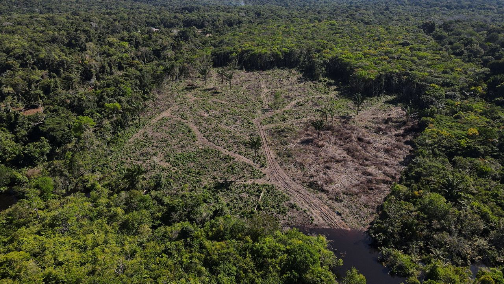
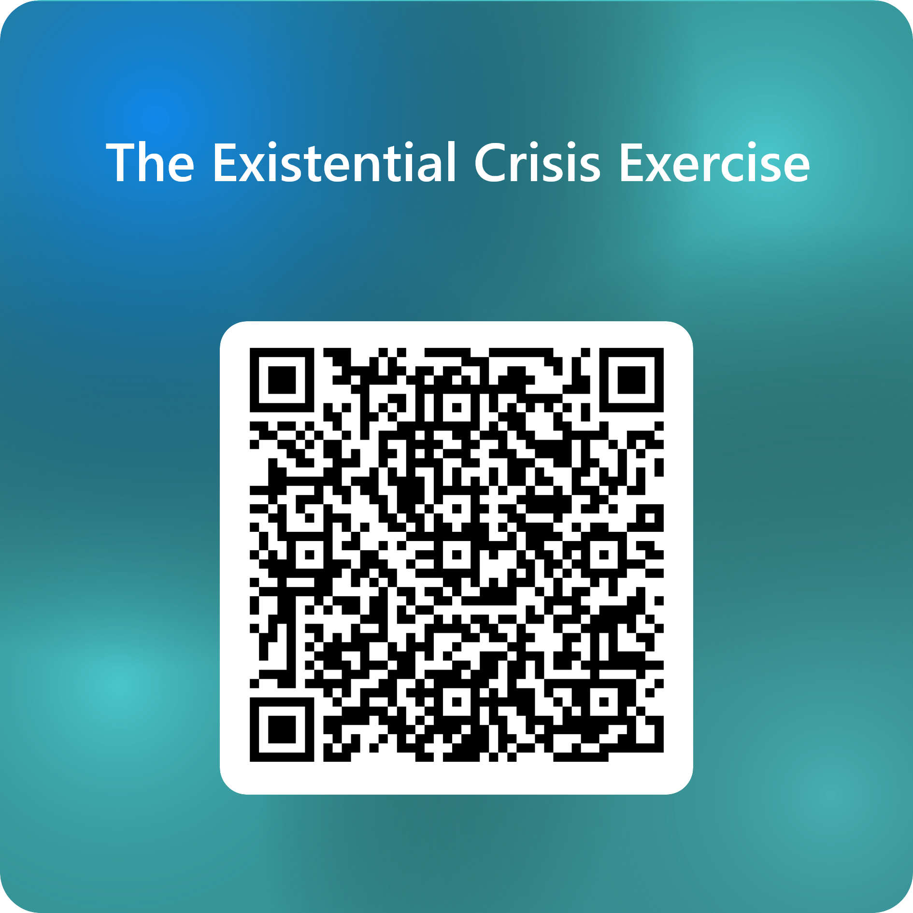

Lecture 24: Climate, Cooperation, and Saving the World
PSCI 3328 — International Relations
2026-04-22
Attendance

Introduction
Reminder: presentations!
Then, final exam review session on last lecture before exam
Final exam, in class, on May 11th
Final Papers due May 10th
Today’s Schedule
- Climate Change and the International Order — Planetary threats vs. state-centric institutions
- Emerging Risks and the Governance Gap — AI, bioweapons, and why governance lags technology
- Activity: The Existential Crisis Exercise — $100 billion to save the world
Climate Change and the International Order
The mismatch between planetary threats and state-centric institutions
The Scale of the Problem
Climate change is different from every other IR problem we have studied this semester:
- Caused by the aggregate actions of everyone on Earth, not a single actor
- Harms are delayed: emissions today cause damage decades from now
- The worst impacts fall on states that contributed least to the problem
- Solving it requires cooperation among every major economy simultaneously
Why is this a harder collective action problem than nuclear arms control?
The Tragedy of the Commons
Collective Action and the Global Commons
Garrett Hardin (1968) showed that shared resources are depleted when individual users act rationally but independently.
- The atmosphere is the ultimate commons: every state benefits from emissions, but the costs are shared globally
- Each state has a free-rider incentive: let others cut emissions while continuing to grow
- The larger the group, the harder cooperation becomes (Olson, 1965). Climate requires near-universal participation among 193 states.
- Unlike nuclear arms control (bilateral, verifiable), climate cooperation has no enforcement mechanism and no way to exclude free-riders
This is the structural logic of anarchy (Week 3) applied to the planet itself.
Patrick’s Diagnosis: Institutional Failure
Planetary Politics
Stewart Patrick argues that the multilateral system treats ecological crises as secondary to traditional security and economic concerns.
- The climate regime depends on “a hodgepodge of uncoordinated national pledges driven by short-term domestic political and economic considerations”
- Global spending on conservation: ~$68 billion (roughly the global ice cream market)
- Global spending on environmentally damaging subsidies: $4–6 trillion per year
- The institutions built after 1945 were designed for interstate conflict, not planetary survival
Source: Patrick, “The International Order Isn’t Ready for the Climate Crisis,” Foreign Affairs (2021)
What Patrick Proposes
Patrick calls for three shifts:
Redefine sovereignty: States do not have unlimited sovereignty over their natural environment. Territorial sovereignty “should not constitute a blank check to plunder collective resources.”
Put a price on nature: Carbon taxes, border carbon adjustments, elimination of fossil fuel subsidies. Make firms assume the ecological costs of their activity.
Strengthen multilateral environmental governance: A global environmental pact with actual enforcement mechanisms, not aspirational pledges.
Each proposal runs directly into the obstacles we studied in Weeks 2–3 (anarchy), Week 12 (IOs), and Week 13 (illiberalism).
What do you think?
The Power Dimension
Satia (2022) adds a layer Patrick underplays:
- Climate discourse is shaped by who gets to define “sacrifice” and who bears its costs
- The industrialized world built its wealth on carbon emissions. Asking developing countries to “sacrifice” growth assumes all states started equal.
- 3.3 to 3.6 billion people live in areas highly vulnerable to climate change, most of whom contributed least to the problem

Aerial view of deforestation in the Amazon Basin
This connects to Week 6 (race, class, identity) and Week 11 (IPE). Climate politics is inseparable from the global distribution of power.
Why Wet-Bulb Temperature Matters
A concept your generation may confront directly:
- Wet-bulb temperature measures heat combined with humidity at 100% saturation
- At 35°C (95°F) wet-bulb, the human body cannot cool itself. Shade, water, rest: none of it matters. Death follows within hours.
- Already at 1.46°C warming above pre-industrial average. On track for 2°C or more unless emissions drop to near zero.
- Runaway effects (melting permafrost, methane release, albedo changes) could push warming far beyond current projections
About physical habitability of large parts of the Earth.
Discussion
Is “planetary politics” compatible with an anarchic international system, or does it require something we have never built?
Emerging Risks and the Governance Gap
Why our institutions cannot keep up with our technology
AI and the Security Dilemma
The security dilemma (Weeks 4 and 7) applies directly to artificial intelligence:
- State A develops military AI to protect itself
- State B perceives this as a threat and develops its own
- Both are less secure than if neither had developed it
- In anarchy, neither can trust the other to show restraint
But AI makes the dilemma worse than nuclear weapons:
- Harder to verify: AI capabilities are dual-use, embedded in civilian tech, and difficult to measure from outside
- Lower barriers to entry: No enriched uranium required. Computing power and talent are the inputs.
- Faster development cycles: The gap between “research breakthrough” and “deployed system” is months, not decades
The Alignment Problem
Beyond military applications, AI poses a deeper challenge:
- The alignment problem: how do you ensure that systems more capable than humans pursue goals compatible with human survival?
- Not just Hollywood robots rebelling. The risk is systems empowered around narrow objectives that lack the judgment to use that power responsibly.
- Current AI systems already write code, generate synthetic media, and conduct scientific research. Capabilities are growing faster than our understanding of how to control them.
Ord estimates the risk from unaligned AI at 1 in 10 this century. Fair?
Bioweapons: The Invisible Threat
Engineered pandemics represent the risk Ord rates second-highest (1 in 30):
- CRISPR has made gene editing cheap and widely accessible
- In 2012, Dutch scientist Ron Fouchier engineered H5N1 bird flu, which kills roughly half of confirmed human cases, to be airborne-transmissible between mammals. The engineered strain traded lethality for transmissibility, but the experiment proved a few mutations could make a deadly virus spreadable.
- COVID-19 had a 1–2% fatality rate. The next engineered pathogen may not trade away its lethality.
- Thousands of labs worldwide now have the technical capacity to create dangerous pathogens
The Biological Weapons Convention (1972) lacks a verification mechanism. Its Implementation Support Unit employs four staff members on a budget of $2.1 million, less than the revenue of an average McDonald’s restaurant.
— Ord, The Precipice (2020)
The Regime Gap
Why does governance lag behind technology? Compare the density of international regimes:
| Domain | Key Agreements | Enforcement | Maturity |
|---|---|---|---|
| Nuclear | NPT, CTBT, IAEA, New START | Inspections, sanctions | 50+ years |
| Climate | UNFCCC, Kyoto, Paris | Voluntary pledges, no penalties | ~30 years |
| Bioweapons | BWC (1972) | None. 4 staff. $2.1M budget. | Hollow |
| AI | None binding | Nothing | ~0 years |
Discussion
Can norms restrain AI the way the nuclear taboo restrained the bomb? What would an “AI taboo” even look like, and who would enforce it?
Activity: The Existential Crisis Exercise
An anonymous donor has $100 billion for you
The Scenario
An anonymous billionaire wants to give your group $100 billion to reduce the risk of human extinction before 2100.
But first, they need your assessment.
You will answer two questions via a form:
- Risk Assessment: How likely is each threat to wipe out humanity before 2100? (0% to 100%)
- Resource Allocation: How do you distribute $100 billion across the four threat areas?
Threats
The four threat categories:
| Category | Examples |
|---|---|
| Nuclear weapons | Arms race, accidental launch, taboo erosion |
| Climate change | Warming, tipping points, resource wars |
| Natural causes | Asteroids, supervolcanoes, solar storms |
| Future technologies | AI, engineered pandemics, unknown unknowns |
For each: rate the risk (0–100%) and allocate your share of $100 billion.
Activity Instructions
Step 1: Get in group of 2–3 people
Step 2: Discuss as a group and fill out the Microsoft Form (10 minutes)

How Are You Going to Spend $100 Billion to Save the World?
Let’s see what the class decided.
Discussion
Let’s discuss the risk numbers first:
- Which threat did most groups rate highest? Does the class agree with Ord’s ranking?
- Ord puts AI at 1 in 10, climate at 1 in 1,000. Did you agree? Why or why not?
- Natural causes (asteroids, supervolcanoes) are the oldest risks. Did any group rate them high? Why do they tend to get less attention?
Did any group rate a threat above 50%? What does it feel like to say there’s a coin-flip chance of extinction?
Discussion (cont.)
Now the money:
- Did your spending match your risk assessment? If you rated AI highest but spent more on climate, why?
- Some threats can be reduced through diplomacy (nuclear arms control). Others require research (AI alignment) or regulation (bioweapons). Did the type of solution affect your allocation?
- Is $100 billion enough? The world spends $2.4 trillion on military budgets annually. What does that tell us about how we currently prioritize these risks?
Who should decide how to allocate resources against existential risk? Governments? International organizations? Private donors? Scientists?
Final Discussion
We spent the semester studying how states cooperate (or fail to cooperate) under anarchy. Based on what you have learned, are you optimistic or pessimistic about humanity’s ability to manage these threats?
Can IR do anything about it?
Up next
Presentations!
Review and Final!
Questions?
PSCI 3328 — International Relations | Giuseppe Peressotti